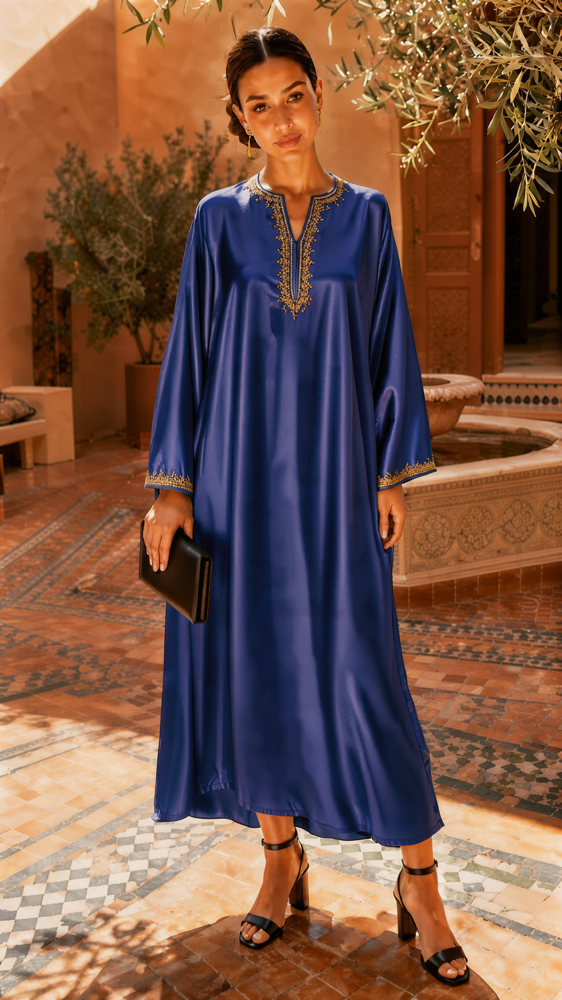
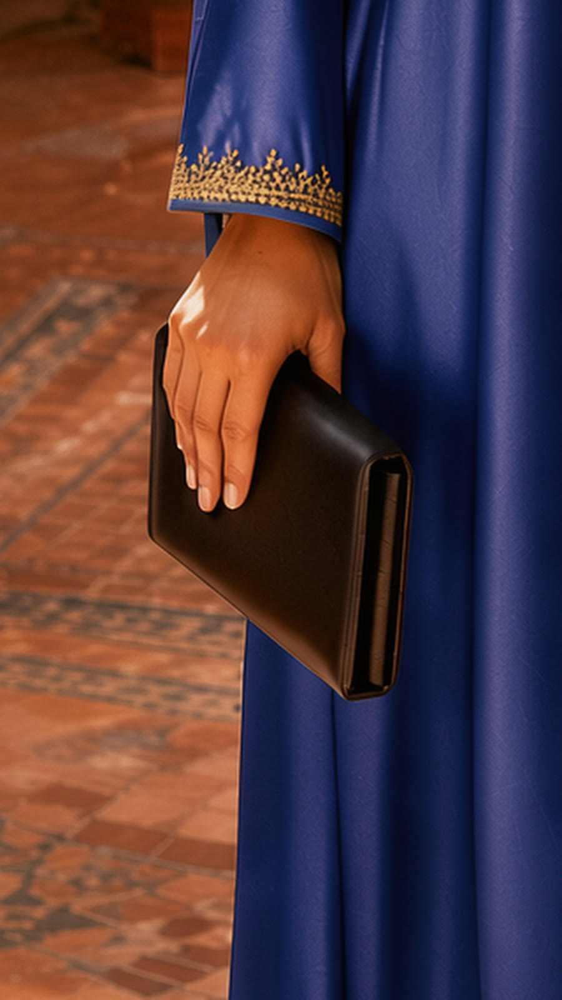
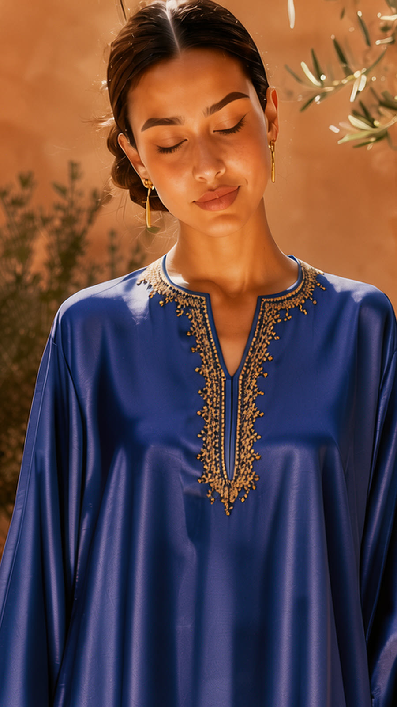
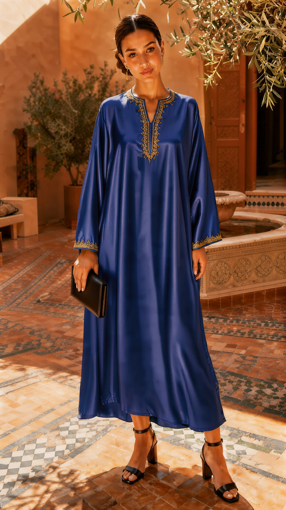

← Portfolio Fashion · AI film
Sapphire kaftan — fashion film
A 30-second vertical fashion film. The brief was to show one sapphire kaftan from head to toe, then bring the viewer closer to its embroidery, clutch and movement without losing continuity of model, light or setting.
The story moves through six restrained shots: a full-look reveal, a planted heel on zellige, cuff and clutch detail, a single eye opening, a back and neckline view, then a return to the full silhouette. The model is fictional and AI-generated.
From approved board to motion
Approved board frames established the garment, location and shot coverage first. Motion was kept small where a larger action risked changing the face, garment or shoe contact.








Final film

Tools used
- FLUX 3 Klein — approved still-image edits
- ComfyUI and LTX 2.5 — shot motion generation
- Custom Python compositing / finishing pipeline — final assembly and export
Turnaround
Two calendar days recorded: production work on 22 Nov and approved final master on 23 Nov 2026. The film is 30 seconds long.
Production choices
The approved sapphire board anchored garment color and shot framing. The final keeps one heel planted, uses restrained camera movement, and limits the eye opening to a localized transition.
Project note
This page describes the finished video and documented workflow; it makes no performance or campaign-result claims.